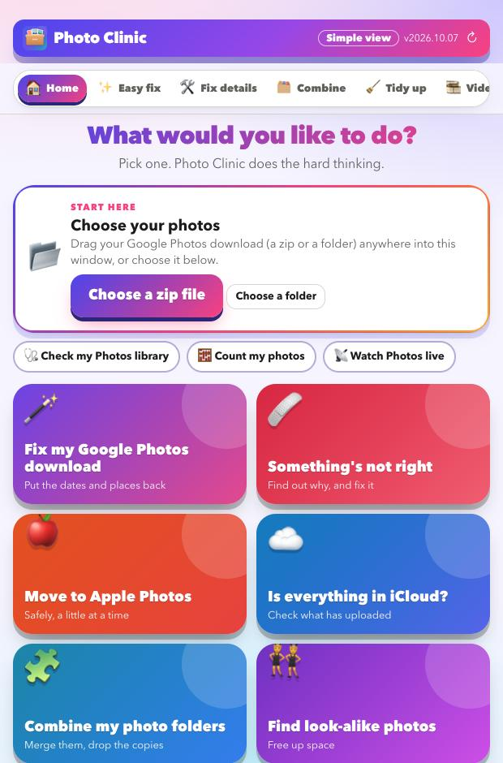

Get your photos out of the shoebox
Photo Clinic cleans up your Google Photos download, watches over Apple Photos and iCloud, and tells you in plain words what is wrong and what to do about it.
Download for MacFree · 66 MB · Apple silicon Macs · signed and checked by Apple · nothing is uploaded

What Photo Clinic does
Five jobs, in the order most people need them, and a promise. Choose one to see exactly what it does.
Clean up your Google Takeout
Puts back the dates, places and captions Google strips out, and sorts out the duplicates and clutter.
See how →Monitor your Photos library
A reading every 15 minutes shows whether Photos and iCloud are syncing, stalled or erroring.
See how →Find what is not right
Reads the hidden Photos and iCloud messages, explains the problem and gives you fixes to try.
See how →Combine and tidy
Merge libraries, remove copies, review look-alikes and convert old videos, with a health score.
See how →Move to Apple Photos
Sends your library in careful batches, oldest first, and waits for iCloud to keep up.
See how →Safe and private
Preview first, copies not originals, undo, and nothing ever leaves your Mac.
See how →How it works
- Choose your photos. Drop in your Google Takeout zip files or a folder.
- Look at the preview. It shows what would change. Nothing is touched yet.
- Press go. Your photos come out fixed, in a new folder, ready for Apple Photos.
Look at your library for free
Download it, point it at your photos, and read the preview. That costs nothing and changes nothing.
Download for MacFree · Apple silicon Macs · signed and checked by Apple